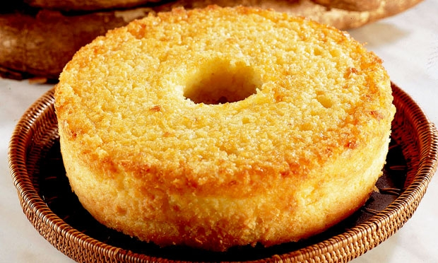

BOLO DE MANDIOCA
O bolo de mandioca é uma das sobremesas mais tradicionais e apreciadas do Brasil, especialmente no Espírito Santo, onde os sabores simples e autênticos ganham destaque. Feito com mandioca ralada, coco e açúcar, esse bolo tem uma textura úmida e macia que conquista a todos. Sua receita, transmitida por gerações, reflete a influência das culturas indígenas e africanas na gastronomia capixaba. Perfeito para acompanhar um café da tarde ou adoçar momentos especiais.

ingredientes (15 porções)
- 3 xícaras de mandioca ralada grosso
- 3 colheres de manteiga
- 4 ovos
- 1 pacote 50 g de queijo ralado
- 1 e 1/2 xícara de açúcar
- 1 e 1/2 xícara de farinha de trigo
- 1 pacote 50 g de coco ralado
- 1 colher (sopa) de fermento em pó
Modo de preparo (50 minutos)
- Bata a manteiga com o açúcar e os ovos.
- Misture a mandioca ralada.
- Junte a farinha e o fermento.
- Por último, acrescente o coco e o queijo ralado.
- Asse em forma untada em forno preaquecido por 40 minutos.